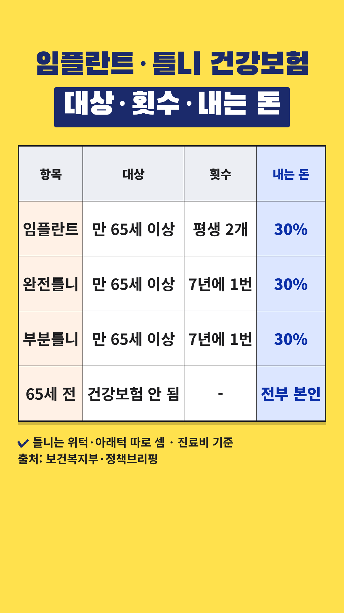

Vrew 작업 카드
2026-10-31-임플란트-틀니-30퍼센트 · 사실 검증과 업로드 전 점검을 통과한 회차입니다. 위에서부터 차례로 복사해 붙여넣으세요.
- 대본 붙여넣기 → AI 목소리(차분한 중년, 0.9~1.0배)
- 장면마다 AI 이미지 문구 복사 → 이미지 바꾸기
- 큰 글자가 있는 장면에 텍스트 추가
- 배경음악(오디오 보관함·Vrew 음원) → 내보내기 mp4
- 제목·설명란·고정댓글 복사해 업로드
0단계 · 첫 장면 강조 제목
Vrew 1번 장면 → 삽입 → 이미지 → 같은 폴더의 title-overlay.png(투명 배경) → 화면 전체 크기로 맨 위에 얹기. 1번 장면의 '큰 글자'는 이 이미지가 대신하므로 따로 넣지 않습니다. 아래 배경은 AI 이미지 자리 표시입니다.
0-1단계 · 숫자 카드 (표 이미지)

표시된 장면들을 하나로 이어 붙이거나 장면마다 → 이미지 바꾸기 → 같은 폴더의 number-N.png를 화면 전체 크기로 넣습니다. 이 장면들에는 AI 이미지와 큰 글자를 넣지 않습니다. 자막은 화면 맨 아래에 두어 표를 가리지 않게 합니다.
1단계 · 대본
1. 대본 붙여넣기
Vrew → 새로 만들기 → 텍스트로 비디오 만들기 → 쇼츠 9:16 → 대본 칸에 붙여넣기
임플란트, 65세부터 30%만 내요. 만 65세부터 건강보험이 적용돼요. 임플란트도, 틀니도 돼요. 표로 보면 내는 돈은 진료비의 30%예요. 임플란트는 평생 2개까지예요. 틀니는 완전틀니, 부분틀니 모두 돼요. 위턱, 아래턱 따로 7년에 한 번씩이에요. 그런데 65세 전에 하면 이 건강보험 혜택이 없어요. 비용을 모두 직접 내셔야 해요. 치과에서 대상자로 등록한 뒤 적용돼요. 65세가 가까우시다면 치료 시기를 치과와 상의해 보세요. 개인 상황에 따라 다르니 전문가와 상담하세요.
2~3단계 · 장면별 이미지와 큰 글자
장면 1
나레이션임플란트, 65세부터 30%만 내요.
AI 이미지밝은 거실 창가에서 환하게 웃는 60대 한국인 부부, 위쪽은 흐린 하늘과 밝은 벽, 따뜻한 자연광, 사실적인 사진 스타일, 세로 9:16 구도, 화면에 글자 없음
큰 글자임플란트·틀니
65세부터 30%
장면 2
나레이션만 65세부터 건강보험이 적용돼요.
AI 이미지작은 생일 케이크 앞에서 미소 짓는 60대 중반 한국인 여성, 숫자 초 없음, 따뜻한 자연광, 사실적인 사진 스타일, 세로 9:16 구도, 화면에 글자 없음
큰 글자만 65세부터
장면 3
나레이션임플란트도, 틀니도 돼요.
AI 이미지밝고 깨끗한 치과 진료실의 빈 진료 의자, 로고 없음, 따뜻한 자연광, 사실적인 사진 스타일, 세로 9:16 구도, 화면에 글자 없음
큰 글자임플란트 + 틀니
장면 4
나레이션표로 보면 내는 돈은 진료비의 30%예요.
숫자 카드number-1.png를 화면 전체로 (AI 이미지·큰 글자 대신)
장면 5
나레이션임플란트는 평생 2개까지예요.
숫자 카드number-1.png를 화면 전체로 (AI 이미지·큰 글자 대신)
장면 6
나레이션틀니는 완전틀니, 부분틀니 모두 돼요.
숫자 카드number-1.png를 화면 전체로 (AI 이미지·큰 글자 대신)
장면 7
나레이션위턱, 아래턱 따로 7년에 한 번씩이에요.
숫자 카드number-1.png를 화면 전체로 (AI 이미지·큰 글자 대신)
장면 8
나레이션그런데 65세 전에 하면
숫자 카드number-1.png를 화면 전체로 (AI 이미지·큰 글자 대신)
장면 9
나레이션이 건강보험 혜택이 없어요.
숫자 카드number-1.png를 화면 전체로 (AI 이미지·큰 글자 대신)
장면 10
나레이션비용을 모두 직접 내셔야 해요.
숫자 카드number-1.png를 화면 전체로 (AI 이미지·큰 글자 대신)
장면 11
나레이션치과에서 대상자로 등록한 뒤 적용돼요.
AI 이미지치과 접수 창구에서 서류를 작성하는 60대 한국인 남성, 글자는 흐릿하게, 로고 없음, 따뜻한 자연광, 사실적인 사진 스타일, 세로 9:16 구도, 화면에 글자 없음
큰 글자대상자 등록 후 적용
장면 12
나레이션65세가 가까우시다면
AI 이미지집 안 탁상 달력을 보며 생각하는 60대 초반 한국인 남성, 숫자는 흐릿하게, 따뜻한 자연광, 사실적인 사진 스타일, 세로 9:16 구도, 화면에 글자 없음
장면 13
나레이션치료 시기를 치과와 상의해 보세요.
AI 이미지치과에서 치과의사와 마주 앉아 상담하는 60대 한국인 여성, 로고 없음, 따뜻한 자연광, 사실적인 사진 스타일, 세로 9:16 구도, 화면에 글자 없음
큰 글자치과와 상의
장면 14
나레이션개인 상황에 따라 다르니 전문가와 상담하세요.
AI 이미지공원 벤치에서 함께 웃으며 이야기하는 60대 한국인 부부, 따뜻한 자연광, 사실적인 사진 스타일, 세로 9:16 구도, 화면에 글자 없음
5단계 · 업로드 정보
제목
임플란트·틀니, 만 65세부터 진료비 30%만 내요
설명란
[음원] 칸은 고른 배경음악으로 채운 뒤 올리세요.
만 65세 이상은 치과 임플란트와 틀니에 건강보험이 적용돼, 건강보험 진료비의 30%를 내요. 임플란트는 평생 2개까지, 틀니는 완전틀니·부분틀니 모두 위턱·아래턱(1악) 따로 7년에 한 번 적용돼요. 65세 전에 하면 이 건강보험 혜택이 없어 비용을 모두 직접 내야 해요. 건강보험은 치과에서 대상자로 등록한 뒤 적용돼요. [함께 알아 두세요] - 30%는 건강보험이 적용되는 진료비 기준이에요. 건강보험이 되지 않는 재료·시술(비급여)이 더해지면 내는 돈이 늘 수 있으니 시술 전에 치과에 물어보세요. - 7년 안에 불만족·분실 등으로 틀니를 새로 만들면 건강보험이 적용되지 않아요. 잇몸이 갑자기 변한 경우 등은 예외가 있을 수 있어요. - 의료급여 수급자와 본인부담 경감 대상(차상위 등)은 내는 비율이 더 낮을 수 있어요. - 필요한 치료를 무리하게 미루지 말고, 치료 시기는 치과와 상의하세요. [출처] - 보건복지부 보도자료 '건강보험 보장 수준 높아진다' (2026.09.08, 별첨 혁신방안 보고서): https://www.korea.kr/briefing/pressReleaseView.do?newsId=156780667 - 보건복지부 보도자료 '65세 이상 어르신 치과 임플란트 본인부담 50%에서 30%로 낮아진다!' (2018.04.25): https://www.mohw.go.kr/board.es?act=view&bid=0027&list_no=344643&mid=a10503010100 - 보건복지부 보도자료 '65세 이상 틀니·임플란트 건강보험 적용 등 보장성 확대' (2016.04.05): https://mohw.go.kr/board.es?act=view&bid=0027&list_no=330878&mid=a10503010100 - 정책브리핑 '65세 이상 의료급여수급자 틀니 지원' (2024.06.19): https://www.korea.kr/multi/visualNewsView.do?newsId=148930505 - 보건복지부 '노인 완전틀니 급여화 등 치과진료 관련 Q&A' (2012.06.20): https://www.korea.kr/archive/expDocView.do?docId=32151 - 정책브리핑(위클리공감) '부모님 치아 치료비 목돈 안 들어요' (2015.12.04): https://www.korea.kr/news/policyNewsView.do?newsId=148803905 [꼭 직접 확인해 주세요] 이 영상은 정책브리핑·보건복지부 보도자료를 바탕으로 만들었고, 건강보험 요양급여기준 고시 원문은 직접 대조하지 못했어요. 기준은 바뀔 수 있으니 시술 전 국민건강보험공단(☎1577-1000)이나 치과에서 확인해 주세요. [음원] [Vrew 작업 후 vrew.md 음원 기록란에서 채우기] [안내] 이 영상은 공공기관 자료를 바탕으로 한 일반 정보이며, 진료·치료를 권하거나 특정 치과를 추천하지 않습니다. 적용 여부와 내는 돈은 구강 상태와 치료 방법 등 개인 상황에 따라 다르니 치과의사와 상담하세요. 안내 내용은 2026년 10월 31일 열람 기준이에요. #쇼츠 #임플란트 #틀니 #건강보험 #65세
고정댓글
부모님이나 본인이 건강보험으로 임플란트·틀니를 해 보셨나요? 치과에서 안내받은 경험을 댓글로 나눠 주세요.
업로드 추천 시간: 저녁 7시 30분